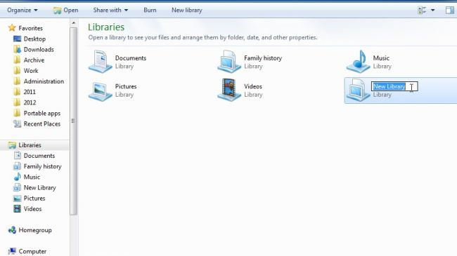

Windows 7 has both simplified and streamlined computing, making it as easy as possible to use your PC in productive ways instead of fiddling about behind the scenes trying to get from A to B.
But whether you've just upgraded to Windows 7 or have been using it for a few years, you might be surprised to learn what tips and tricks have eluded you in your quest for a better computing experience.
Throughout this article, we're going to reveal everything you need to grasp the fundamentals of using Windows. We're not going to show you how to point the mouse and click, but we'll go over the key parts of using your computer and reveal a selection of useful techniques and tricks that can help you gain mastery over your computer instead of feeling like it's bending you to its will.
You'll discover how to navigate your computer more quickly using the new tools built into Windows 7 and learn the essential skills to protect your computer from data loss and threats to your security. We'll reveal how to quickly fix problems using the Action Center and look at ways of keeping your PC in tip-top condition. You'll find out how Windows can help maintain your computer and optimise its performance so you spend less time twiddling your thumbs and more time getting on with what you want to do.

It's not just about Windows either – you'll also learn some useful tips and tricks for tapping into the new features found in Microsoft Office 2010 and master key internet skills like surfing the web and managing your emails. You don't have to be a newcomer to benefit from this guide either – while there's a certain joy in being able to get up and running quickly with a new version of Windows, you may find you've missed out on some fundamental techniques that could save you time in the future.
Even if you think this guide won't teach you anything new, it's worth taking a little time to acquaint yourself with anything that might have escaped your attention. Spend just 24 hours (not necessarily in one go!) learning the key skills of using Windows and it'll pay itself back many times over as you find yourself quickly finding the file or program you need, avoiding viruses and browsing the web more quickly. Go on, sit down, get a cup of tea and find out how to become more productive with your computer.